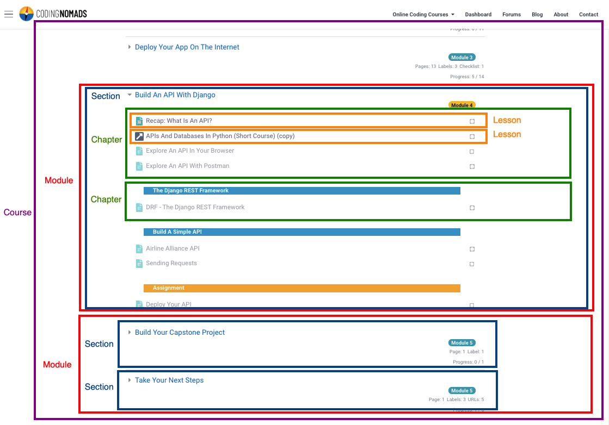

Content Creation Guidelines¶
Naming Convention¶
Course Structure Naming Convention: Our courses are structured as follows:
course
└── module
└── section
└── chapter
└── lesson
Let's describe what each of them represent:
- Course: This is your full course, e.g. "Python Programming"
- Module: Modules are a collection of Sections that logically belong together and could be taken together. Sections are grouped together using Module Tags
- Section: Also sometimes called "Section Topics" or even just "Topics" in Moodle 🙄. These are the collapsible sections and used for high-level structuring of the content
- Chapter: You create chapters by sub-dividing sections using Section Dividers
- Lesson: Each activity or resource that you create in your course (e.g. a Page or a Quiz) can be referred to as a "lesson". This is the smallest unit that will be visible in the course overview

In this diagram you saw a visual description of the different elements as they appear on our platform.
Structure¶
The following points give guidance on how to structure your technical writing to improve readability and help readers to learn from your material.
Three-Step Principle¶
Follow the three-step-teaching principle: Many have recommended to use this structure, and we do too.
- Intro: Tell your students what information you will give them
- Main: Give them that info
- Recap: Tell them what information they just got
Attempt to follow these three simple steps even for short sections. Our brain processes new information in small chunks, and it needs a proper introduction and recap to fully absorb new topics. Assume that your students are new to everything you're teaching them. Following the outlined steps above helps them with remembering the content you're teaching. It makes learning more fun and effective for your students.
Sum-Up Paragraphs¶
Sum up paragraphs: Try to sum up the paragraph's entire content in the first sentence. You can think of it as a mini-intro and mini-conclusion all in one piece. The body of the paragraph that follows explains the concept in more detail and gives readers a chance to linger and absorb the information.
Parallel Structure¶
Use parallel structure for lists and headings: Clarity is important for technical writing. Always use parallel structure when creating list items as well as headings. Parallel structure means to use the same sentence structure for each new piece of information. E.g. I wrote all the headings on this page as nouns. Each paragraph that introduces new information begins with a verb and attempts to convey the main idea of that paragraph. Parallel structure is very powerful in making your content look well structured, it can help yourself to plan out a topic clearly, and it helps your students to easier absorb the information.
Flat TOC¶
Use a flat TOC structure: Aim on using main headings and one additional level of sub-headings, not more. To correctly integrate with our platform, that means using <h3> headings as your main headings, and <h4> as sub-headings.
Text Blocks¶
Use text blocks: Each paragraph should have some visible body to it. If a text contains multiple paragraphs that consist of only one or two sentences the text may at first sight appear less professional. No need to be too strict about this, but something to keep in mind. On the other hand, also avoid making your paragraphs too blocky.
Visual Aids¶
Use visual aids: Using graphs, code blocks, or also fun memes and images can help to lighten the information load on your students. Technical content can get overwhelming. You're encouraged to loosen it up and give a break to your readers' eyes by introducing visual aids. If a text section seems long and dry to yourself, it will also seems so to your students. Pop in some images to change the visual pace.
List & Paragraph Headings¶
Use list and paragraph headlines: Bolded words or short sentences at the beginning of a list item or a paragraph help to introduce a topic. They guide your students' eyes and assist in easier absorbing relevant information. Always try to keep them in parallel structure.
Formatting¶
The following points provide guidance on how to format your technical writing for consistency and readability.
Consistency¶
Be consistent: Just like in programming, there are many correct ways of formatting your content. Please adhere to this style guide to allow consistency across all CodingNomads courses. And, most importantly, be consistent within your own course materials.
Bolding¶
Use bolding for new terms: Bolding should be used to introduce new terms and highlight key phrases (e.g. "In this section, you'll learn about iteration")
Emphasis¶
Use emphasis to put focus on a word: Emphasis should be used to, well, put emphasis on a word or part of a sentence (e.g. "There is so much to learn")
'You' vs. 'We'¶
Use "you" instead of "we": Talking directly to your student makes them feel personally addressed and more engaged. (e.g. "The project you'll be working with...")
Tone¶
The following points give guidance on what to look out for in terms of tone and word choice when creating technical tutorials.
General Tone¶
Be friendly, supportive, and professional: Our students should feel that they are chatting with a knowledgeable and encouraging friend who is invested in their progress and also happens to be an expert on the subject matter.
Word Choice¶
Choose your words wisely: Avoid using words such as "easy", "straightforward", "obvious" etc. Your students are new to this topic, and what might seem easy to you, won't necessarily be easy for them. To avoid alienating students, rather use words such as "user-friendly".
Personality¶
Show your personality as an author: No one likes to read or watch a sterile tutorial when learning something new and challenging. Add your personal touches--be it xkcd comics, memes, or dad jokes. Of course only if that's how you roll. Don't force it, but feel free to make it fun both for yourself while writing and recording, as well as for your students when going through the course. Most of all, allow yourself to be authentic instead of sterile.
Mistakes¶
Show the instructor is also a mere mortal: It helps students to know that you also make mistakes, and that also for you some concepts were daunting at first or difficult to grasp.
Support¶
Show that you're supportive: Programming topics are tough and often confusing for newcomers. It can easily feel overwhelming, even after making some progress, when the door opens up wider and ever more information starts flooding in. Try to help your students by giving them a stable ground to stand on. Be supportive and encourage them to keep learning.
Fun¶
Feel free to have some fun! We want our students to enjoy our courses as much as possible and laugh as often as possible! :)
Images¶
Make sure to only use image material that is copyright-free. Here are a couple of resources where you can find free stock images: